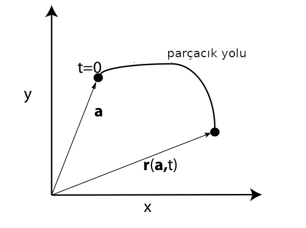

Kütle Muhafazası
Ufak bir kutu ya da hacim ögesi düşünelim, kenarları çok küçük $\Delta x$, $\Delta y$, $\Delta z$ boyutlarında, ve bu kutu uzayda sabitlenmiş, içinden sıvı akıyor. Sabitlenmiş bir noktada olanlara baktığımız için bu Euler bakış açısı, detaylarını ileride göreceğiz. Neyse, şimdi sadece $x$ yönündeki kütle değişimine bakalım,
Sıvının akış hızı $u(x,y,z) = (u,v,w)$, ve yoğunluğu $\rho$ olsun. Birim zamanda içeri akan net kütleyi giren eksi çıkan kütle olarak hesaplayacağız. Bu zamanda $x$ yönünde akış kenarları $\Delta y$, $\Delta z$ ve $u(x,y,z)$ (ufak dik duran bir pizza kutusu gibi) olan bir kesit düşünebilir. Bu birim zamandaki akış hacmi. Onu yoğunluk ile çarpınca kütle elde edilir, aynı şeyi $x + \Delta x$ noktası için de yaparız, ve farklarını alırız,
$$ \rho(x,y,z)u(x,y,z)\Delta y \Delta z - \rho(x+\Delta x,y,z) u(x+\Delta x,y,z)\Delta y \Delta z $$
Üstteki formüldeki bir bölüm bir kısmi türevi andırıyor, $\Delta x$ ile bölüp çarpsak,
$$ = \frac{\rho(x,y,z)u(x,y,z)}{\Delta x}\Delta x \Delta y \Delta z - \frac{\rho(x+\Delta x,y,z) u(x+\Delta x,y,z)}{\Delta x} \Delta x \Delta y \Delta z $$
Evet iki bölme işlemini yaklaşık olarak kısmı türev olarak görebiliriz,
$$ \approx -\frac{\partial (\rho u) }{\partial x} \Delta x \Delta y \Delta z $$
Benzer işlemi tüm eksenler için ayrı ayrı yapsak onlar için de kısmi türevler elde ederdik, o zaman tüm eksenler üzerinden olan değişim, ve farksal hacmi $\Delta V = \Delta x \Delta y \Delta z$ olarak göstererek,
$$ \left( -\frac{\partial (\rho u) }{\partial x} -\frac{\partial (\rho u) }{\partial y} -\frac{\partial (\rho u) }{\partial z} \right) \Delta V $$
Üstteki gradyan ve vektörsel olarak daha rahat ifade edilebilir,
$$ = -\nabla \cdot (\rho \bar{u} ) \Delta V $$
Birim zamandaki kütle artışı buna eşit. Üstteki ifadeyi farklı bir açıdan, birim zamandaki kütle (yoğunluk çarpı hacim) artışı olarak, şöyle de belirtebilirdik,
$$ \frac{\partial }{\partial t} (\rho \Delta V) $$
Bu formül iki üstteki formül ile eşit olmalı. Ayrıca her iki tarafta $\Delta V$ var, çıkartılabilir, zaten sabit bir hacim, sonuç,
$$ \frac{\partial \rho}{\partial t} = -\nabla \cdot (\rho \bar{u} ) $$
Literatürde çoğunlukla şu formda gösterilir,
$$ \frac{\partial \rho}{\partial t} + \nabla \cdot (\rho \bar{u} ) = 0 \qquad (1) $$
Bu denkleme süreklilik formülü (continuity equation) ya da kütle muhafaza kanunu (mass convervation law) ismi veriliyor.
Bilinen Vektör Calculus eşitliğinden hareketle
$$ \frac{\partial \rho}{\partial t} + \bar{u} \cdot \nabla \rho + \rho \cdot \nabla \bar{u} = 0 $$
Eğer bir sıvı sıkıştırılamaz (incompressible) ise, ki pek çok sıvı dinamiği simülasyonlarında böyle olduğu kabul edilir, o zaman $\rho = sabit$ demektir, $\frac{\partial \rho}{\partial t} = 0 $ olur, değişim yok, süreklilik formülünden geri kalan
$$ \nabla \cdot \bar{u} = 0 \qquad (2) $$
olacaktır.
Euler ve Lagrange
Euler ve Lagrange bakış açısı arasındaki farklarla başlayalım. Bu iki bakış açısı bir sıvının dinamiğini nasıl incelediğimiz ile alakalı. Eğer bir nehirdeki kirlilik yoğunluğunu ölçüyorsak mesela, bunu herhangi bir $x,y,z$ noktasında yapabiliriz, ve diyelim ki kirlilik belli bir yerde hiç değişmiyor, ertesi gün gelsek aynı yerde aynı ölçümü alıyoruz [2, sf 78]. Bu yere bağımlı Euler açısı.
Fakat farklı yerlerde farklı ölçümler olabilir, mesela nehir boyunca bir kayık içinde sabit hızda gidersek yoğunluk lineer oranda artıyor. Bu durumda pir paket sıvıyı takip ettiğimizi düşünebiliriz, o paketin açısından elde edilen ölçümler Lagrange bakış açısıdır.
İki bakış açısı arasında gidip gelmenin yolu materyel türev. Böylece Euler bazındaki değişim kullanılarak Lagrange tarifi yapılabiliyor. Bu önemli çünkü ölçümler çoğunlukla Euler formatında düşünülür (bir yerde duran ölçüm aleti idare etmesi ve düşünmesi daha rahat bir kavramdır), ayrıca matematik Euler ortamında biraz daha kolay manipüle edilebilir hale geliyor [3].
Lagrange ile bir parçacık hayal ediyoruz, onu tanımlamanın bir yolu $t=0$ anında nerede olduğu. Daha sonra bu başlangıç noktasındaki sıvı paketinin hangi yolu takip ettiğini $\bar{r}(t)$ ile tarif ediyoruz, ki $\bar{r}(t)$ parametrik bir eğri olarak düşünülebilir, $r = ( x(t), y(t), z(t) )$. Eğer bir başlangıç noktasını $a$ olarak tanımlarsak bu başlangıcın ve yol denkleminin bir parçacığı tarif ettiğini düşünebiliriz,

Şimdi herhangi bir ölçümü düşünelim [4], biraz önce kirlilik örneği verdik, bu sıcaklık ta olabilirdi, ölçüm $F(t,x,y,z)$ olsun, $t$ anında ve $x,y,z$ noktasında yapılan ölçüm, bu ölçüme Calculus'un Zincirleme Kuralını uygularsak, değişim oranını materyel türev $D F / Dt$'yi nasıl elde edebileceğimizi görebiliriz,
$$ \frac{D F}{D t} = \frac{\partial F}{\partial t} + \frac{\partial F}{\partial x} \frac{\partial x}{\partial t} + \frac{\partial F}{\partial y} \frac{\partial y}{\partial t} + \frac{\partial F}{\partial z} \frac{\partial z}{\partial t} $$
$(\frac{\partial x}{\partial t}, \frac{\partial y}{\partial t},\frac{\partial z}{\partial t})$ hız olarak görülebilir, ona $\bar{u} = (u,v,w)$ vektörü diyelim,
$$ \frac{D F}{D t} = \frac{\partial F}{\partial t} + \frac{\partial F}{\partial x} u + \frac{\partial F}{\partial y} v + \frac{\partial F}{\partial z} w $$
Ayrica $(\frac{\partial F}{\partial x},\frac{\partial F}{\partial y},\frac{\partial F}{\partial z})$ gradyan vektoru $\nabla F$,
$$ \frac{\partial F}{\partial t} + \bar{u} \cdot \nabla F $$
Burada $\frac{\partial F}{\partial t}$ ölçülen $F$'nin tek, sabit bir yerde zamana göre değişimidir. Bu terime yapılan ekler hareket halindeki parçanın ek olarak göreçeceği ölçüm değişim oranı olacaktır.
Alınan türev bir operatör olarak görülebilir,
$$ \frac{D ()}{D t} = \frac{\partial () }{\partial t} + \bar{u} \cdot \nabla () $$
Üzerinde operatör uygulanan $()$ içine gider, $F$ için
$$ \frac{D F}{D t} = \frac{\partial F}{\partial t} + \bar{u} \cdot \nabla F $$
ile önceki formüle eriştik.
Şimdi ilginç bir noktaya geldik, süreklilik denklemi (1)'i, $\rho$ ölçümü üzerinde materyel türev uygulanmış formu olarak görmek mümkün,
$$ \frac{D \rho}{D t} + \rho \nabla \cdot \bar{u} = 0 $$
Pürüzsüz Parcaçık Dinamiği (Smoothed Particle Dynamics -SPH-)
Sıvının akışını simüle etmek pek çok alanda faydalı olabilecek bir tekniktir. Sıvıların kendisine ek olarak gazları yoğunluğu daha az olan sıvı olarak görebiliriz, hatta katı maddeler de akışkanlığı çok az sıvı gibi düşünülebilirse, böylece aerodinamikten başlayıp, gemi tasarlamaya, oradan oyunlarda duman simülasyonuna kadar giden geniş yelpazede teknikler kullanım bulabilir.
SPH tekniği bu sıvı simülasyon yöntemlerinden birisidir. Navier-Stokes denklemleri bir sıvının akışını tanımlar, bu denklem simülasyon ortamında yaklaşık olarak çözülmelidir [5], bunu yapmanın iki yolu vardır. Önceki anlatımdan hareketle herhalde cevabı tahmin edebiliriz, birisi Lagrange usulü diğeri Euler usulü. SPH yöntemi Lagrange yaklaşımını takip eder, yani bir sıvı paketini alıp onun zaman ve uzayda gidişini izler. Tek bir yere mıhlanmış olmamanın (Euler usulü) pek çok avantajları var, mesela oyun grafiklerini çizerken daha geniş bir alanda iş yapabilmek mümkün, farklı maddeler arasındaki iletişim daha rahat halledilebiliyor, vs.
Formülasyon için temel fizikle başlayalım. Simüle ettiğimiz bir sıvı paketidir demiştik, bu paketin ivmesini takip edelim mesela, bunun önemli olacagini tahmin edebiliriz, oradan kuvvet, enerji bağlantıları var, $F=ma$ formülünden hareketle, ve materyel türev ile
$$ m \frac{D \bar{u}}{D t} = F^{toplam} $$
diyebiliriz. Daha önce materyel türevi yoğunluk üzerinde uygulamıştık, pek çok farklı ölçüt üzerinde materyel türev kullanılabilir demiştik, ayrıca hız $\bar{u}$ materyel türev içinde kullanılmakta, ama hızın kendisine de gayet rahat bir şekilde materyel türev uygulanabilir.
Üstteki eşitliğin sağ tarafını detaylandırabiliriz, düşünelim, hangi kuvvetler bir sıvı akışı sırasında sıvı paketi / parçacık üzerinde etki ediyor? Bunlar sırasıyla basınç, ağdalık, ve yerçekim olurdu herhalde, bal gibi ağdalı bir sıvıda parçalar birbirlerine yapışkandır, şu için daha az, bu bir kuvvettir. Yerçekimi bir kuvvettir doğal olarak. Basınç ta öyle, biraz derine dalan herkes etrafındaki suyun basıncını bir kuvvet olarak hisseder. O zaman,
$$ m \frac{D \bar{u}}{D t} = F^{\textrm{basınç}} + F^{\textrm{ağdalık}} + F^{\textrm{yerçekim}} $$
diyebiliriz. Kuvvetlerden en basiti yerçekimi, $F^{\textrm{yerçekim}} = m \bar{g}$. İvme $\bar{g}$ bir vektör olarak gösterildi, bu $\bar{g} = (0, 0, 0.98)$ olurdu, sadece z ekseni üzerinde etki eden bir ivmelenme yani.
Diğer kuvvet basınç. Yüksek basınç bölgeleri alçak basınç bölgelerinde doğru bir kuvvet uygular. Basıncın tüm sıvı için $p(\bar{x})$ değişkeninde olduğunu düşünelim, peki basınç dengesizliğini matematiksel olarak göstermenin en basit yolu nedir? Basıncın negatif gradyanını almak, $-\nabla p$ olur mu acaba? Evet. Temel Calculus'tan hatırlarsak gradyan en dik iniş yönünü gösterir, o zaman gradyanın negatifi yüksek basınç bölgesinden dışarı, alçak basınç bölgesine doğru gösterecektir. Tabii ki bu etkiyi üzerinde olduğumuz sıvı paketinin hacmi üzerinden entegre etmemiz gerekir, ama basit bir yaklaşıklama olarak onu direk hacim $V$ ile çarpabiliriz. Tümü $F^{\textrm{basınç}} = - V \nabla p$.
Üçüncü kuvvet ağdalık. Ağdalı bir sıvı deforme edilmeye karşı direnir. Bu kuvveti kabaca "her parçacığı yanındaki diğer parçacıkların ortalama hızında hareket etmesini zorlayan kuvvet" olarak görebiliriz, bir diğer deyişle birbirine yakın olan parçacıkların arasındaki hız farklarını minimize etmeye uğraşan kuvvet. Şimdi, mesela görüntü işleme literatürünü düşünürsek, o alanda çalışanlar bir ölçünün etrafındaki ortalamadan ne kadar saptığını hesaplamalak için bir diferansiyel operatör kullanır, bu operatör Laplasyan $\nabla \cdot \nabla$. Bu operatör, aynı şekilde hacim üzerinden entegre edilince bize ağdalık kuvvetini verebilir, burada bir ek her sıvının farklı ağdalığını formüle dahil edebilmek için bir de bir dinamik ağdalık sabiti (dynamic viscosity coefficient) $\mu$ ile herşeyi çarpmak gerektiği, o zaman $F^{\textrm{ağdalık}} = V \mu \nabla \cdot \nabla \bar{u}$ formülünü elde ediyoruz.
Hepsini bir araya koyunca,
$$ m \frac{D \bar{u}}{D t} = m\bar{g} - V \nabla p + V \mu \nabla \cdot \nabla \bar{u} $$
Bu denklemi hacim ve kütle limite giderken düşüneceğiz, ama bu haliyle formül problem çıkartabilir, o zaman her şeyi $V$ ile bölersek ve sonra limiti düşünürsek daha iyi olur, $m/V$'yi sıvı yoğunluğu $\rho$ olarak tanımlayalım,
$$ \rho \frac{D \bar{u}}{D t} = \rho \bar{g} - \nabla p + \mu \nabla \cdot \nabla \bar{u} $$
Bu denklem bazıları için tanıdık gelebilir.. Navier-Stokes denklemine benzemiyor mu? Navier-Stokes ünlü denklemi,
$$ \frac{\partial \bar{u}}{\partial t} + \bar{u} + \frac{1}{\rho} \nabla p = \bar{g} + \nu \nabla \cdot \nabla \bar{u} $$
$$ \nabla \cdot \bar{u} = 0 $$
olarak gösterilir.
Neyse bizim türetişle devam edersek, her şeyi yoğunluk $\rho$ ile bölelim,
$$ \frac{D \bar{u}}{D t} + \frac{1}{\rho} \nabla p = \bar{g} + \frac{\mu}{\rho} \nabla \cdot \nabla \bar{u} $$
Basitleştirme amacıyla kinematik ağdalık $\nu = \mu / \rho$ tanımlayalım, o zaman
$$ \frac{D \bar{u}}{D t} + \frac{1}{\rho} \nabla p = \bar{g} + \nu \nabla \cdot \nabla \bar{u} $$
Sıkıştırılamazlığın (incompressibility) $\nabla \cdot \bar{u} = 0$ olduğunu daha önce (2)'de görmüştük.
Kaynaklar
[1] Bayramlı, Materyel Türev, Euler ve Lagrange Bakış Açısı, https://youtu.be/XDrt-uATAY8
[2] Storey, Fluid Dynamics
[3] Lumley, Eulerian and Lagrangian Descriptions in Fluid Mechanics, https://www.youtube.com/watch?v=XDrt-uATAY8
[4] Berloff, Introduction to Geophysical Fluid Dynamics, https://wwwf.imperial.ac.uk/~pberloff/gfd_lectures.pdf
[5] Schuermann, Particle-Based Fluid Simulation with SPH, https://lucasschuermann.com/writing/particle-based-fluid-simulation